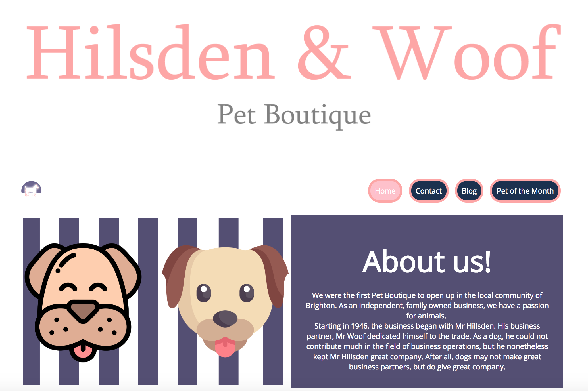

My Work
check out some of my projects
Project
Github
- Created this website to practice making a responsive site with BootStrap.
- Created this website to practice making a responsive site with BootStrap.
- Technologies used: HTML:5, CSS, BootStrap

Project
Github
Hilsden and Woof - dog boutique website
-This was created without any frameworks.
-This was built with HTML, CSS, JavaScript, JQuery
- The layout was created with FlexBox and CSS grids
- features: contact box, blog, events and responsive
 Project
Github
Project
Github
Chatter - Social media site
The biggest and most exciting project yet
- This is a fully-functional social media website most similar to twitter
- features - login, signup, send messages, follow users, search users, find trending topics and much more
-Made with HTML, CSS, PHP, JavaScript, AJAX, MySQL databases, relational diagrams
- Login: jibs
- Password: abcd1234